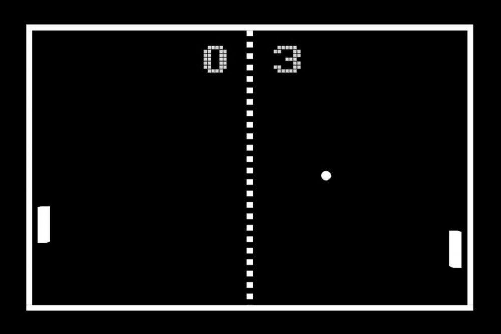
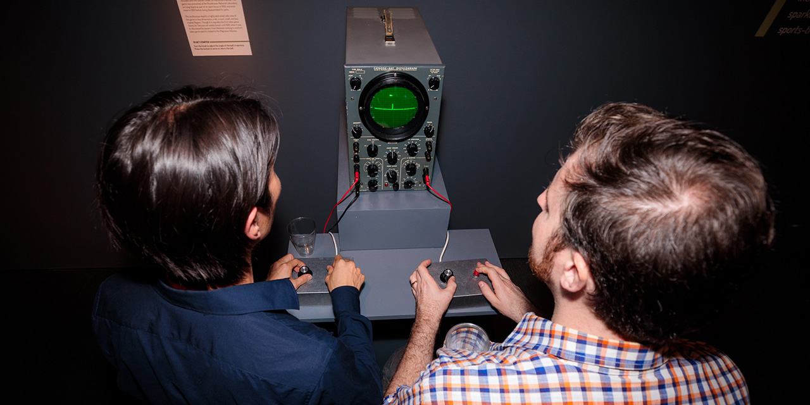

This wiki is your hub for exploring a journey offering guides, lore, walkthroughs, and community knowledge on titles across every platform and genre. Whether you’re here to learn, contribute, or relive gaming history, you’ll find it all right here.

The history of video games begins in the late 1950s. In 1958, physicist William Higinbotham created Tennis for Two
on an oscilloscope at the Brookhaven National Laboratory. The game was simple—a tennis-like
simulation where two players used controllers with knobs and buttons to hit a ball back and
forth across the screen.
Although it was never sold commercially, Tennis for Two is often considered the first true video game because it was interactive, used a display, and was built purely for entertainment. Shortly after, other pioneering games like Spacewar! (1962) and Pong (1972) carried the medium into wider popularity, laying the foundation for the massive gaming industry we know today.